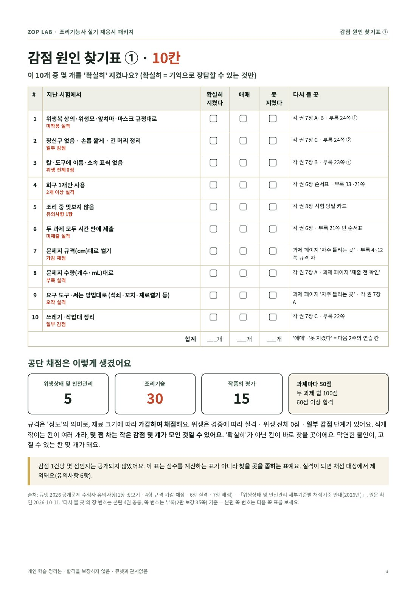

ZOP LAB
조피 자료실
조피예요. 조리기능사 실기 준비하면서 만든 자료를
여기 다 모아 뒀어요. 필요한 것만 가져가세요.
무료 샘플
조리기능사 실기 무료 샘플 7쪽
비빔밥 과제 3쪽, 실격 체크리스트 1쪽, 인쇄 카드 1쪽에 표지·안내 2쪽이에요. 우리 책이 어떻게 생겼는지 먼저 보는 용도예요.
열어보기 (0원)
시험 일정 · 10~12월
상시 실기 발표·접수 날짜
발표 날 아침 9시, 같은 날 10시에 두 회차 뒤 접수가 열려요.
- 10/15(목)19회 발표 · 21회 접수 ~10/16(금) 18:00
21회 시험 10/26~11/6 - 10/29(목)20회 발표 · 22회 접수 ~10/30(금) 18:00
22회 시험 11/9~11/20 - 11/12(목)21회 발표 · 23회 접수 ~11/13(금) 18:00
23회 시험 11/23~12/4 - 11/26(목)22회 발표 · 24회 접수 ~11/27(금) 18:00
24회(올해 마지막) 시험 12/7~12/16 - 12/10(목)23회 발표
- 12/22(화)24회 발표. 올해 남은 접수는 없어요.
출처: 큐넷 공고 제2025-241호 「2026년도 국가기술자격 상시검정 시행계획」. 날짜가 바뀔 수 있으니 내 회차 큐넷 공지가 우선이에요.
큐넷에서 확인하기
D-day 체크 카드 · 폰 배경용
시험 2주 전부터 한 장씩
D-14, D-7, D-3, 당일 아침. 내 시험일에서 거꾸로 세서 그날 카드를 폰 배경으로 두면 돼요. 누르면 크게 열리고, 길게 눌러 저장할 수 있어요.
위는 4종목(한·양·중·일) 공통판이에요. 한식판: D-14 · D-7 · D-3 · 당일 아침
열어보기


체크리스트 · 한식 실기
준비물·실격 항목, 가방 싸기 전에
요리 실력은 하루아침에 안 늘어도, 준비물 실격은 오늘 밤 10분이면 0개로 만들 수 있어요.
열어보기
복장 6가지
- 위생복 상의: 전체 흰색, 손목까지 긴소매. 안 입으면 실격
- 위생복 하의: 발목까지 긴바지. 레깅스·치마·바닥 끌리는 바지는 위생 0점
- 위생모: 전체 흰색, 빈틈없이. 안 쓰면 실격, 머리카락 보이면 위생 0점
- 앞치마: 전체 흰색, 무릎 아래까지. 안 하면 실격
- 마스크: 색·재질 무관. 안 하면 실격
- 위생화: 굽 낮고 발가락·발등·뒤꿈치 덮이는 것
몸에 붙은 것
- 장신구 전부 빼기 (위생모 고정용 머리핀만 허용)
- 긴 머리는 머리망, 손톱은 짧게, 매니큐어 안 돼요
- 손에 상처가 있으면 밴드 + 위생장갑
이름 표식
- 들고 가는 물품에 이름·소속이 보이면 안 돼요. 조리도구는 테이프로 가리는 것도 안 돼요 (위생 0점)
도구
- 목록 외 조리기구를 쓰면 실격. 목록은 큐넷 '수험자 지참준비물'에서 내 종목·내 회차로 확인
- 눈금 있는 도구는 실격은 아니지만, 눈금에 기대 재면 채점에 반영돼요
마지막 줄
- 수험표, 신분증, 시험장 위치와 입실 시각
- 칼 날은 전날 새로 세우지 말고 상태만 확인
출처: 큐넷 「위생상태 및 안전관리 세부기준별 채점기준 안내」(2026), 2026 공개문제 한식조리기능사 수험자 유의사항. 개인 학습 정리라 최종 기준은 내 회차 큐넷 공지가 우선이에요.
미리보기 · 재응시용
감점 원인 찾기표, 한 쪽 미리보기
아깝게 떨어졌다면 연습보다 먼저, 어디서 깎였는지부터 찾아요. 10칸에 '확실히 / 애매 / 못 지켰다'로 표시하는 표예요.

열어보기 (1쪽)써 보고 괜찮았다면
더 필요하면
실기 4종 복기책 (한·양·중·일)
감점 찾기표 전체, 2주 플랜, 부록 35쪽이 들어 있어요. 24,000원이에요. 위 자료로 충분하면 안 사셔도 괜찮아요.
자세히 보기